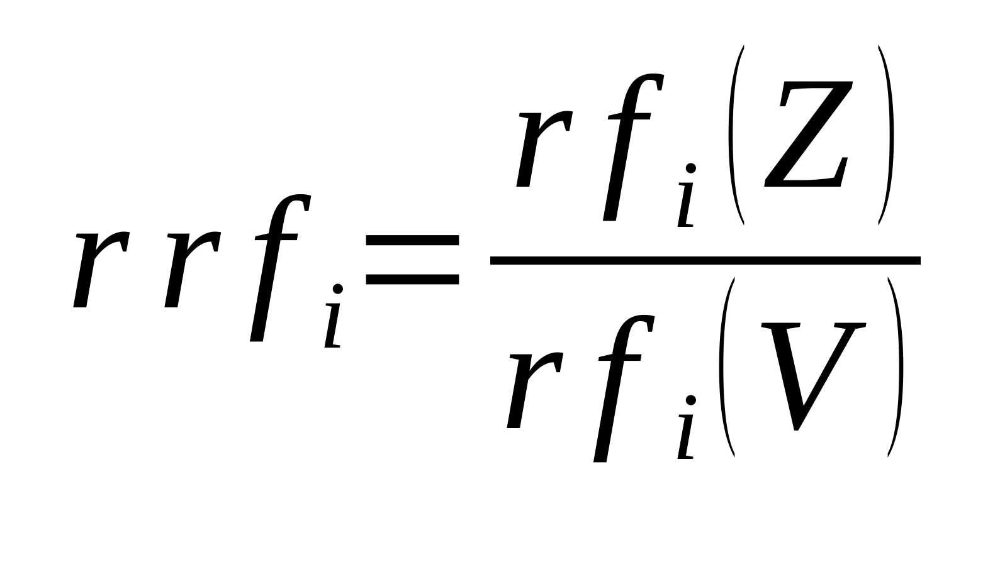
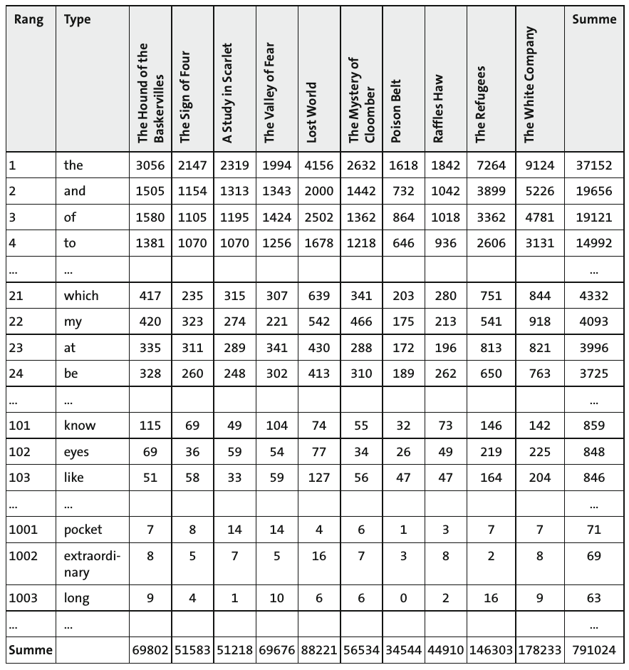
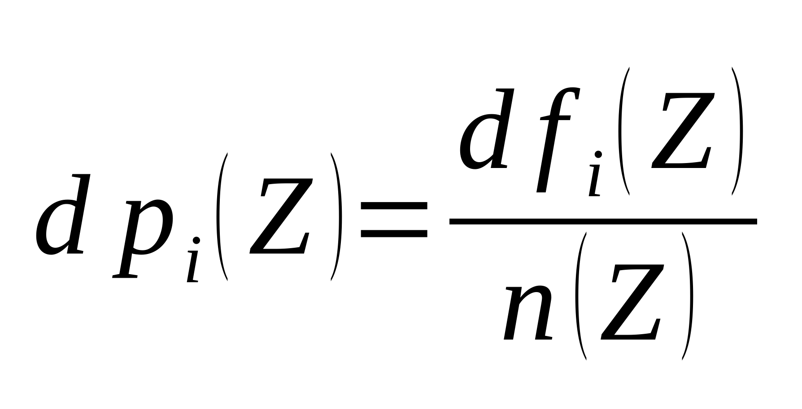
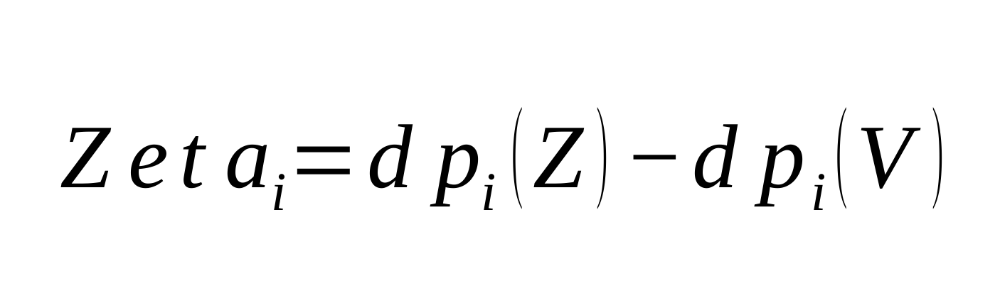
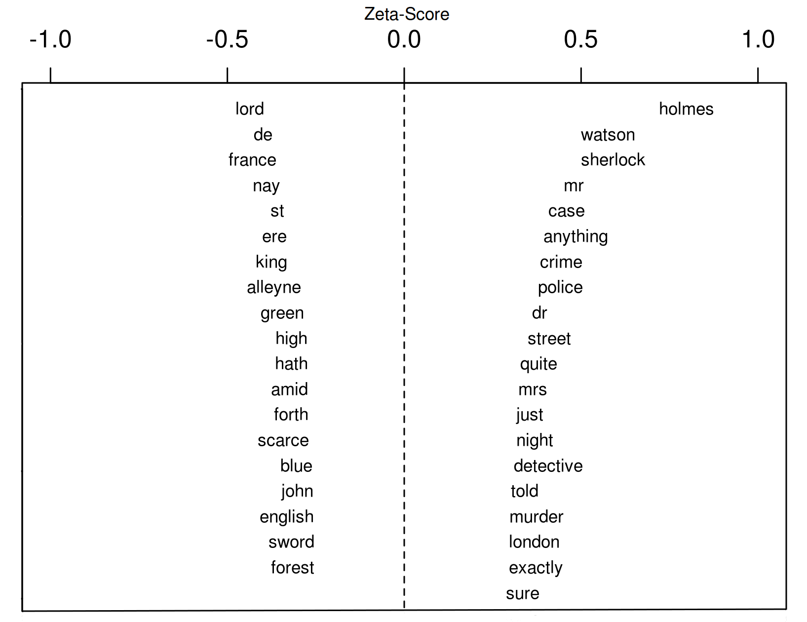
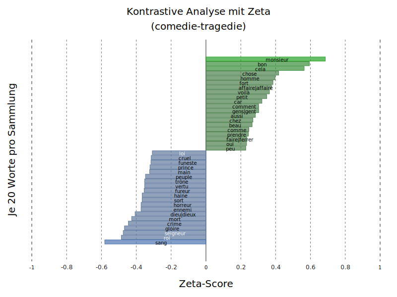

<!doctype html>
<html lang="en">
<head>
<meta charset="utf-8">
<!-- CUSTOMIZE THIS! -->
<title>pyzeta</title>
<meta name="author" content="Christof Schöch">
<!-- END -->
<meta name="description" content="Slides">
<meta name="apple-mobile-web-app-capable" content="yes">
<meta name="apple-mobile-web-app-status-bar-style" content="black-translucent">
<meta name="viewport" content="width=device-width, initial-scale=1.0, maximum-scale=1.0, user-scalable=no, minimal-ui">
<link rel="stylesheet" href="css/reveal.css">
<link rel="stylesheet" href="css/theme/simple.css" id="theme">
<!-- Code syntax highlighting -->
<link rel="stylesheet" href="lib/css/zenburn.css">
<!-- Printing and PDF exports -->
<script>
var link = document.createElement( 'link' );
link.rel = 'stylesheet';
link.type = 'text/css';
link.href = window.location.search.match( /print-pdf/gi ) ? 'css/print/pdf.css' : 'css/print/paper.css';
document.getElementsByTagName( 'head' )[0].appendChild( link );
</script>
<!--[if lt IE 9]>
<script src="lib/js/html5shiv.js"></script>
<![endif]-->
</head>

<body>
<div class="reveal">
<!-- THIS IS WHERE THE CONTENT GOES! -->
<!-- Any section element inside of this container is displayed as a slide -->
<div class="slides">

<section data-markdown>
<script type="text/template">
# Kontrastive Analyse<br/> mit Zeta
<hr/>
<br/>
<br/>
<p>Februar 2017</p>
<br/>
<hr/>
<p>Christof Schöch<br/>(Computerphilologie / CLiGS, Universität Würzburg)</p>
<p></img>&nbsp;&nbsp;&nbsp;&nbsp;&nbsp;&nbsp;</img>&nbsp;&nbsp;&nbsp;&nbsp;&nbsp;&nbsp;</img></p>
</script>
</section>

<section>


<section data-markdown>
<script type="text/template">
# 2. Kontrastive Analyse
</script>
</section>

<section data-markdown>
<script type="text/template">
## Grundidee: Vergleich
<br/>
* Gleichrangige Partitionen <!-- .element: class="fragment" data-fragment-index="1" -->
    * Zwei Autoren: Shakespeare vs. Marlowe
    * Zwei Gattungen: Tragödien vs. Komödien
    * Zwei Epochen: Klassik vs. Romantik
* Unterschiedliche Partitionen <!-- .element: class="fragment" data-fragment-index="2" --> 
    * Tragikomödien vs. alle übrigen Dramengattungen 
    * Ein Roman vs. das gesamte Romanwerk des Autors  
    * Autor vs. Referenzkorpus  
</script>
</section>

<section data-markdown>
<script type="text/template">
## Verhältnis der relativen Häufigkeiten
<br/>
<p></img></p>
* Z = Zielpartition <!-- .element: class="fragment" data-fragment-index="1" --> 
* V = Vergleichspartition <!-- .element: class="fragment" data-fragment-index="2" --> 
* rfi = relative frequency von Wort i <!-- .element: class="fragment" data-fragment-index="3" --> 
</script>
</section>


<section data-markdown>
<script type="text/template">
## Schwächen und Alternativen
<br/>
* Berücksichtigt die Verteilung nicht <!-- .element: class="fragment" data-fragment-index="1" --> 
    * t-Test berücksichtigt Standardabweichung, nimmt aber Normalverteilung an <!-- .element: class="fragment" data-fragment-index="2" --> 
    * Rangsummentest berücksichtigt Verteilung, keine Annahme der Normalverteilung <!-- .element: class="fragment" data-fragment-index="3" --> 
* Es kann kein Signifikanztest berechnet werden <!-- .element: class="fragment" data-fragment-index="4" --> 
    * t-Test und Rangsummentest erlauben dies <!-- .element: class="fragment" data-fragment-index="5" --> 

</script>
</section>


<section data-markdown>
<script type="text/template">
## Merkmalsmatrix
<p><a href="img/merkmalsmatrix.png"></img></a></p>
<p>(Conan Doyle-Sammlung)</p>
</script>
</section>


<section data-markdown>
<script type="text/template">
## Zeta-Maß (1: document proportions)
<br/>
<p></img></p>
* Bilden kurzer Textsegmente <!-- .element: class="fragment" data-fragment-index="1" --> 
* dfi = document frequency von Wort i <!-- .element: class="fragment" data-fragment-index="2" --> 
* n = Anzahl der Segmente <!-- .element: class="fragment" data-fragment-index="3" --> 
</script>
</section>

<section data-markdown>
<script type="text/template">
## Zeta-Maß (2: Substraktion)
<br/>
<p></img></p>
<p>Zeta: einfache Subtraktion</p>
</script>
</section>

<section data-markdown>
<script type="text/template">
## Implementierung: oppose() in stylo
<p><a href="img/zeta2_Craig_nicer.png"></img></a></p>
<p><a href="https://sites.google.com/site/computationalstylistics/">sites.google.com/site/computationalstylistics/</a></p>
</script>
</section>

<section data-markdown>
<script type="text/template">
## Implementierung: pyzeta
<p><a href="img/zetascores_comedie-tragedie_1000-lemmata-all.svg"></img></a></p>
<p><a href="https://github.com/cligs/pyzeta">github.com/cligs/pyzeta</a></p>
</script>
</section>

<section data-markdown>
<script type="text/template">
## Document proportions und Zeta
<p><a href="img/typescatter_comedie-tragedie_1000-lemmata-all_500.svg"></img></a></p>
<p>(Beispiel: französische Theaterstücke)</p>
</script>
</section>

<section data-markdown>
<script type="text/template">
## Eigenschaften von Zeta
<br/>
* Berücksichtigt indirekt die Verteilung (Segmentierung, Dokumenthäufigkeit) <!-- .element: class="fragment" data-fragment-index="1" --> 
* Favorisiert Wörter mittlerer Häufigkeit (keine Funktionswörter) <!-- .element: class="fragment" data-fragment-index="2" --> 
* Favorisiert gleichmäßig verteilte Wörter (keine Namen) <!-- .element: class="fragment" data-fragment-index="3" -->
* Es wird kein p-Wert oder Ähnliches ermittelt <!-- .element: class="fragment" data-fragment-index="4" --> 
</script>
</section>

<section data-markdown>
<script type="text/template">
## PCA mit distinktiven Merkmalen
<p><a href="img/threeway_pca.png"></img></a></p>
<p>(Beispiel: französische Theaterstücke)</p>
</script>
</section>

<section data-markdown>
<script type="text/template">
## Hintergrund
<br/>
* Position der Tragikomödie relativ zu Komödie und Tragödie <!-- .element: class="fragment" data-fragment-index="1" --> 
* Frage der Gattungen: "gute" Exemplare vs. Mischformen <!-- .element: class="fragment" data-fragment-index="2" --> 
</script>
</section>


</section>
<section>

<section data-markdown>
<script type="text/template">
## Lektüre-Empfehlungen
<small>

* Bortz, Jürgen, and Christof Schuster. Statistik für Human- und Sozialwissenschaftler. 7. Auflage. Berlin: Springer, 2010.
* Hoover, David L. “Teasing out Authorship and Style with T-Tests and Zeta.” In Digital Humanities Conference. London, 2010. http://dh2010.cch.kcl.ac.uk/academic-programme/abstracts/papers/html/ab-658.html.
* Lijffijt, Jefrey et al. “Significance Testing of Word Frequencies in Corpora.” _Digital Scholarship in the Humanities_ 31, no. 2 (2014): 374–97. doi:10.1093/llc/fqu064.
* Oakes, Michael P. Statistics for Corpus Linguistics. Edinburgh: Edinburgh Univ. Press, 1998.
* Schöch, Christof: „Zeta für die kontrastive Analyse literarischer Texte. Theorie, Implementierung, Fallstudie“, in: <em>Quantitative Verfahren in der Literaturwissenschaft. Von einer Scientia Quantitatis zu den Digital Humanities</em>, ed. Andrea Albrecht, Sandra Richter, Marcel Lepper, Marcus Willand und Toni Bernhart, Berlin: de Gruyter (erscheint 2017).
* Rayson, Paul, and R. Garside. “Comparing Corpora Using Frequency Profiling.” In Proceedings of the Workshop on Comparing Corpora, 1–6. Hong Kong: ACM, 2000.


</small>
</script>
</section>


</section>


<section data-markdown>
<script type="text/template">
<br/>
<br/>
<br/>
## Danke!
<br/>
<br/>
<br/>
<br/>
<br/>
<br/>
<br/>
<hr/>
<p>Christof Schöch, 2017</p>
<p><a href="https://christofs.github.io/">christofs.github.io</a></p>
<p><a href="https://creativecommons.org/licenses/by/4.0/">CC-BY 4.0</a><br/></p>
<hr/>
<br/>
<br/>
</script>
</section>


<!-- DON'T TOUCH UNLESS YOU KNOW WHAT YOU'RE DOING :-) -->
</div>
<script src="lib/js/head.min.js"></script>
<script src="js/reveal.js"></script>
<script>
// Full list of configuration options available at:
// https://github.com/hakimel/reveal.js#configuration
Reveal.initialize({
    controls: true,
    progress: true,
    history: true,
    center: true,
    transition: 'slide', // none/fade/slide/convex/concave/zoom
    // Optional reveal.js plugins
    dependencies: [
        { src: 'lib/js/classList.js', condition: function() { return !document.body.classList; } },
        { src: 'plugin/markdown/marked.js', condition: function() { return !!document.querySelector( '[data-markdown]' ); } },
        { src: 'plugin/markdown/markdown.js', condition: function() { return !!document.querySelector( '[data-markdown]' ); } },
        { src: 'plugin/highlight/highlight.js', async: true, callback: function() { hljs.initHighlightingOnLoad(); } },
        { src: 'plugin/zoom-js/zoom.js', async: true },
        { src: 'plugin/notes/notes.js', async: true }
        ]
    });
</script>
</body>
</html>
